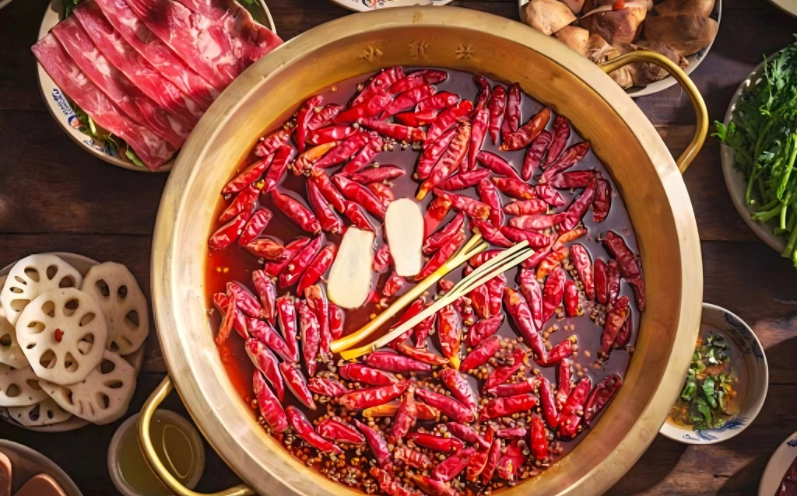

麻辣火锅是四川最具代表性的非遗美食，以牛油为核心底料，搭配辣椒、花椒、八角、桂皮等数十种香料慢火熬制。汤底红亮浓郁、麻辣鲜香，是川渝地区饮食文化的灵魂，也是全国最受欢迎的火锅品类。
1. 牛油下锅融化，爆香葱姜蒜、豆瓣酱、糍粑辣椒
2. 加入花椒、八角、香叶等香料炒出香味，注入骨汤熬煮30分钟
3. 准备毛肚、鸭肠、肥牛、蔬菜等涮菜，摆盘备用
4. 汤底煮沸后即可涮煮食材，搭配油碟/干碟食用
毛肚、鸭肠遵循“七上八下”原则，涮8-10秒口感最脆嫩；不能吃辣可选择鸳鸯锅；搭配香油蒜泥碟能有效解辣，保护肠胃，是吃麻辣火锅的标配蘸料。